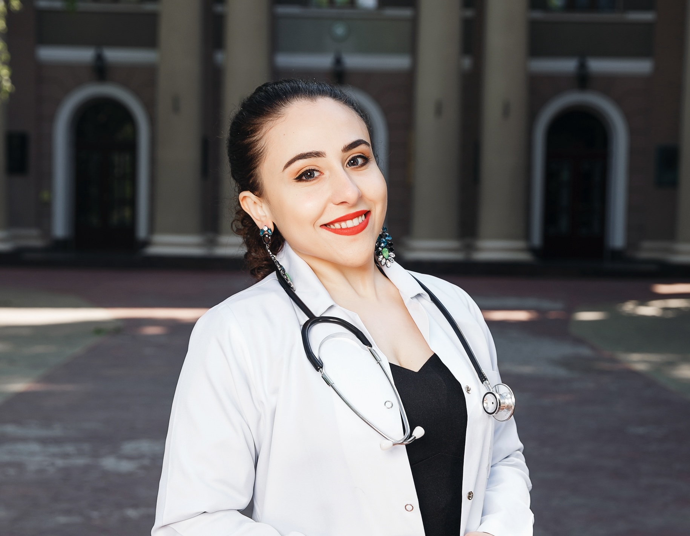

|
Feryal Kurdi, M.D.
I am a dedicated and innovative junior plastic surgeon with a profound commitment to transforming lives through precision, artistry, and compassion. With extensive experience spanning complex procedures such as neck dissections and breast reconstructions, I strive to restore both form and function, empowering patients with renewed confidence and improved quality of life. My clinical PhD research on the cutting-edge application of indocyanine green (ICG) in breast cancer surgery exemplifies my dedication to advancing the field through evidence-based innovation and surgical excellence. I am eager to bring my expertise, passion, and patient-centred philosophy to deliver outstanding care while driving progress in plastic and reconstructive surgery.
Email |
CV |
Google Scholar |
LinkedIn
|

|